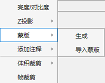
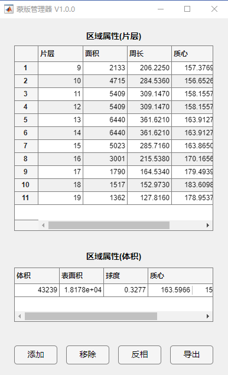
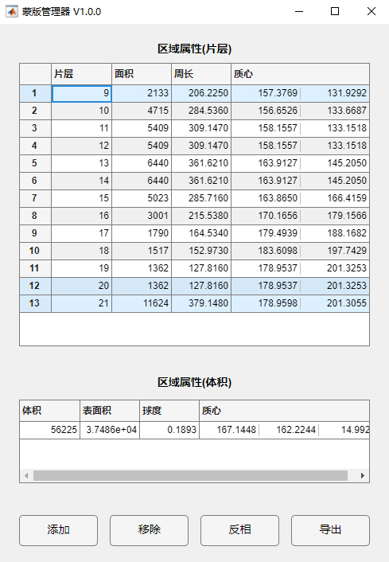
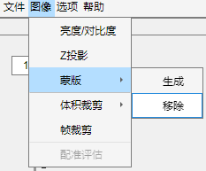

1.2.5 蒙版

蒙版可用于生成或导出蒙版，用于提取感兴趣的区域。
点击生成蒙版，可使用蒙版管理器结合ROI区域绘制得到体积蒙版。
 
通过控制在配准器组件浏览器中设置ROI, 单击添加 将ROI添加为蒙版。
通过多选区域属性(片层)中的多个项目，点击移除可将蒙版片层移除。
使用导出选择蒙版的导出位置并保存。如果选择反相，将使ROI选择区域值为false, 未选择区域为true。

当导入蒙版后，原始导入蒙版成为移除，点击可移除已导入蒙版以还原图像。
注：任何图像裁剪操作均会同步至已加载蒙版。